2023/10/06
posted in
工程化

2023/10/06
posted in
工程化
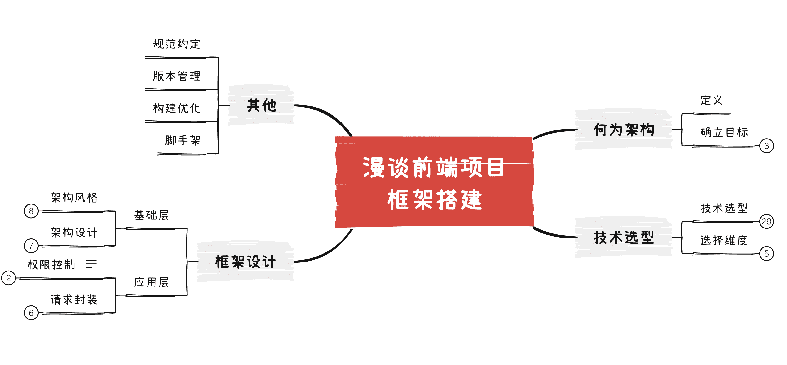
前端框架搭建是每一个前端工程师都会遇到，特别是在一些小型团队内，没有专门的架构师，所以这项工作就落到一些普通的前端开发工程师手中，这时很多人可能会从网上去查找一些成熟的框架，虽然能够完成项目，但是有可能会存在一些问题：
所以，框架搭建是晋升高级前端工程师的必经之路，固有必要探探其究竟。本文不会带大家从编码层面教大家如何写代码，毕竟相关的文章网上比比皆是，本文会带你搞清整个流程和其中的一些关键环节。
在开始整个流程前，我们先开了解一些何为软件架构。
软件架构是有关软件整体结构与组件的抽象描述，用于指导大型软件系统各个方面的设计。软件架构会包括软件组件、组件之间的关系，组件特性以及组件间关系的特性。软件架构可以和建筑物的架构相比拟。软件架构是构建计算机软件，开发系统以及计划进行的基础，可以列出开发团队需要完成的任务。
----wiki百科
简言之，软件架构这项工作的实质就是：如何将系统切分成组件，并安排好组件之间的排列关系，以及组件之间的相互通信的方式。目的是更好的对这些组件进行研发维护，可以让系统更容易理解、易于修改、方便维护、并能轻松部署。终极目标是最大化程序员的生产力，同时最小化系统的总运维成本。
当然，很多人可能会说：团队就我一个前端，老夫都是CV一把梭，去TM的架构，项目照样不是完成了。
其实，现在一些成熟的框架比如我们用的Vue，在用脚手架初始化项目后，整个项目架构已初具雏形了。所以开发一些简单的项目是没有什么问题；而且由于前段历史原因，架构这个词在前端领域可能关注度并不高。但是一些大型项目，或者你去看一些著名的开源库内部实现，就会发现，还是能看到软件架构设计的身影，比如MVC、MVVM等其实就是分层架构，重要性不言而喻。
由于本文主题不是讨论架构，就不再赘述，只需要明确一件事，我们搭建的框架目的是为了提升开发效率，保证开发质量。需要遵循一下几点：
所谓兵马未动粮草先行，技术栈作为我们项目框架的基石，首先我们需要确定选择什么样的技术栈，这关系到后续的一系列事情。
前端框架搭建过程中，可以从如下几个维度做技术选型：
/******* state *******/
const state = reactive({
});
/******* getter *******/
const getter = reactive({
});
/******* actions *******/
const actions = {
};
export const useAppStore = () => ({ state, getter, ...actions });
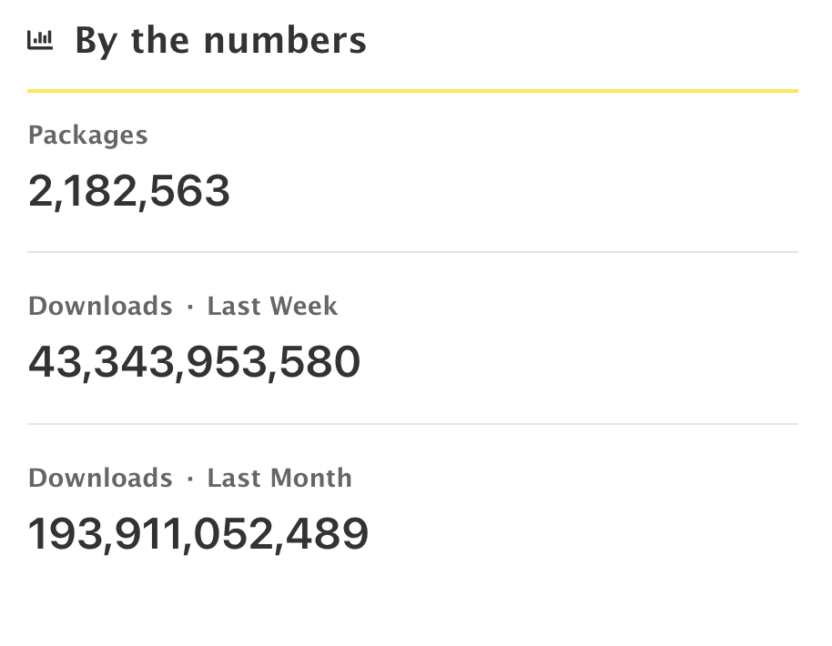
但是需要注意，npm上的包虽然多，但是质量参差不齐，可以从几个方面去筛选。
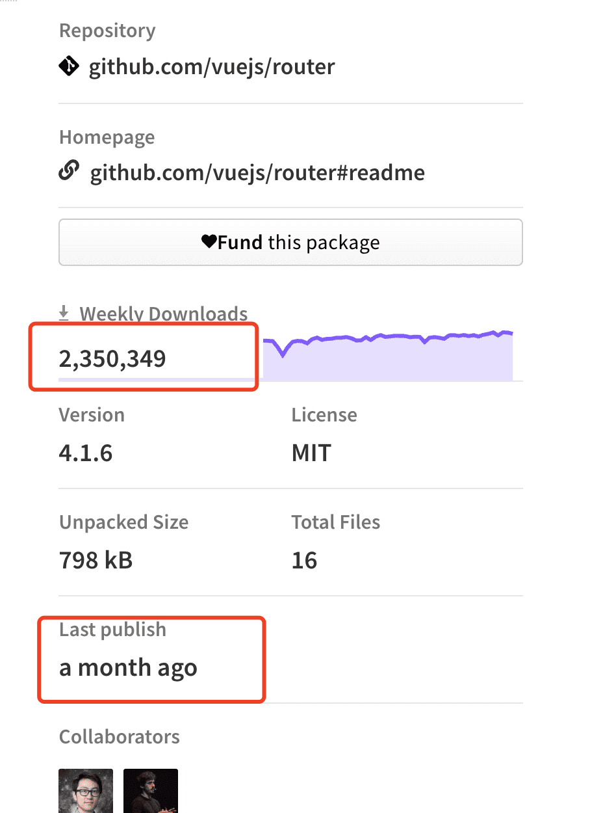
以上是需要进行技术选型的维度，接下来我们就看看通过哪些指标去帮我们做出抉择。
如果选择不熟悉的技术，那么在使用过程中出现风险是不可控的。每种技术都是有它特定的适用场景，开发者经常犯的错误就是盲目追新，当一个新语言、框架、工具出现后，特别是开发者自己学会了这种新技术后，就会有种“拿着锤子找钉子”的感觉，将新技术滥用于各种项目。即使选择较新的技术，也要考虑到学习曲线和开发难度问题，主要结合当前团队的技术特点，熟练程度来考虑。
对内保持团队技术栈统一，减少因为技术不统一带来的协作维护难度；对外符合行业标准，降低招聘难度，缩短新人进入开发的时间。
有强大的生态和社区意味着，很多东西你不需要重复去造轮子，或者遇到问题可以很快解决，有更多的选择。从公司层面、使用活跃的技术也比较好招人。另外在选择技术栈时要尽量避免一些公司的KPI成果，有烂尾的风险。
选择一个技术的最低标准是，技术的生命周期必须显著长于项目的生命周期，好的技术栈永远跑在用户需求前面，是面向未来的。主要考量该技术今后几年是否有人维护，是否在我们项目可预见到的生命期内还能继续开发。如果它不开发了，那么遇到平台升级，遇到第三方组件升级，产生的兼容性问题就很致命。如果当前已经进入开发欠活跃阶段，就要考虑是否不予采用。
选型需要充分地理解业务，理解用户需求，当下需要解决的首要问题，以及可能的风险有哪些，再将目标进行分解，进行具体的技术选型、模型设计、架构设计。处于初创期的业务，选型的基准是灵活。只要一个技术够用并且开发效率足够高，那么就可以选择它。初创的业务往往带有风险性和不确定性，朝令夕改、反复试错是常态，技术必须适应业务的节奏，然后才是其他方面。等业务进入稳定期，选型的基准是可靠。技术始终是业务的基石，当业务稳定了技术不稳，那就会成为业务的一块短板，就必须要修正。当业务进入维护期，选型的基准是妥协。代码永远有变乱的趋势，一般经过一两年就有必要对代码来一次大一点的重构。在这种时候，必须得正视各种遗留代码的迁移成本，如果改变技术选型会带来遗留代码重写，这背后带来的代价业务无法承受，那么我们就不得不考虑在现有技术选型之上做一些小修小补或者螺旋式上升的重构。
比较典型的例子就是Angular和Python，API不稳定会导致社区的割裂，也会导致项目升级成本变高、或者无法升级, 最终成为技术债。
当然，对于团队而言也要鼓励学习新的技术、淘汰旧的技术栈。因为一般而言新的技术或解决方案，是为了更高的生产力而诞生的。
对于未经验证的新技术、新理念的引入一定要慎重，一定要在全方位的验证过后，再大规模的使用。新技术、新理念的出现，自然有它的诱惑，慎重并不代表保守，技术总是在不断前进，拥抱变化本身没有问题，但是引入不成熟的技术看似能带来短期的收益，但是它的风险或者是后期的成本可能远远大于收益。记住，技术选型是稳定压倒一切。
技术选型是个很需要经验的活，得有大量的信息积累和输入，再根据具体现实情况输出一个结果。我们在选型的时候最忌讳的是临时抱佛脚、用网上收集一些碎片知识来决策，这是非常危险的，我们得确保自己所有思考都是基于以前的事实，还要弄清楚这些事实背后的假设，这都需要让知识内化形成经验。
选择技术时，要考虑license问题，不要陷入法律纠纷，特别是你参与的产品对外有机会做大做强、面向国际时。
毕竟技术只是实现业务的手段而已，我们也只是实现领导实现目标的工具而已，技术选型有时可能会受业务需求和领导个人偏好影响，不能一概而论，所以这里只是列出技术选型的注意事项，以作参考，具体选型考量还请结合实际情况而定。
做好了技术选型，接下来就只需要把合适的东西扔到合适的地方就行了。所以接下来我们就来看看框架设计。
框架设计我们可以从两个层面来入手：
基础层：主要是从架构层面出发，包含一些基础设施，与业务相关性较低。
应用层：贴近业务，用于解决某一类/个业务，不同的业务可能并不能通用。
首先我们要选择一种架构风格，不同人的喜好、不同的项目会倾向不同架构风格。这里仅列出其中两种风格。
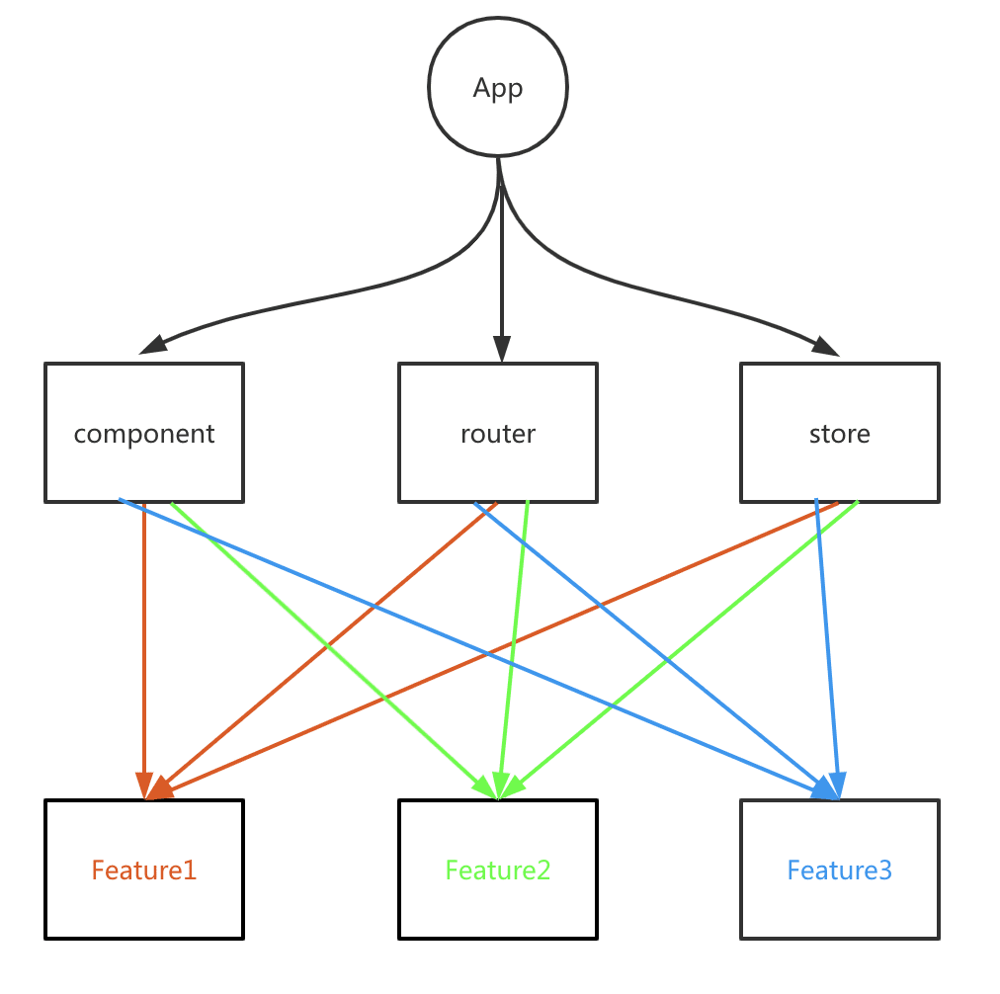
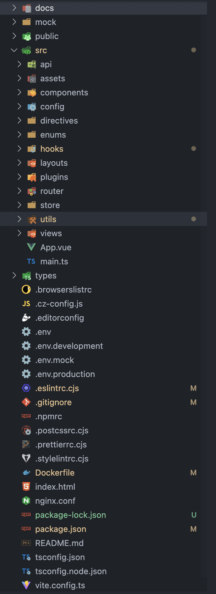
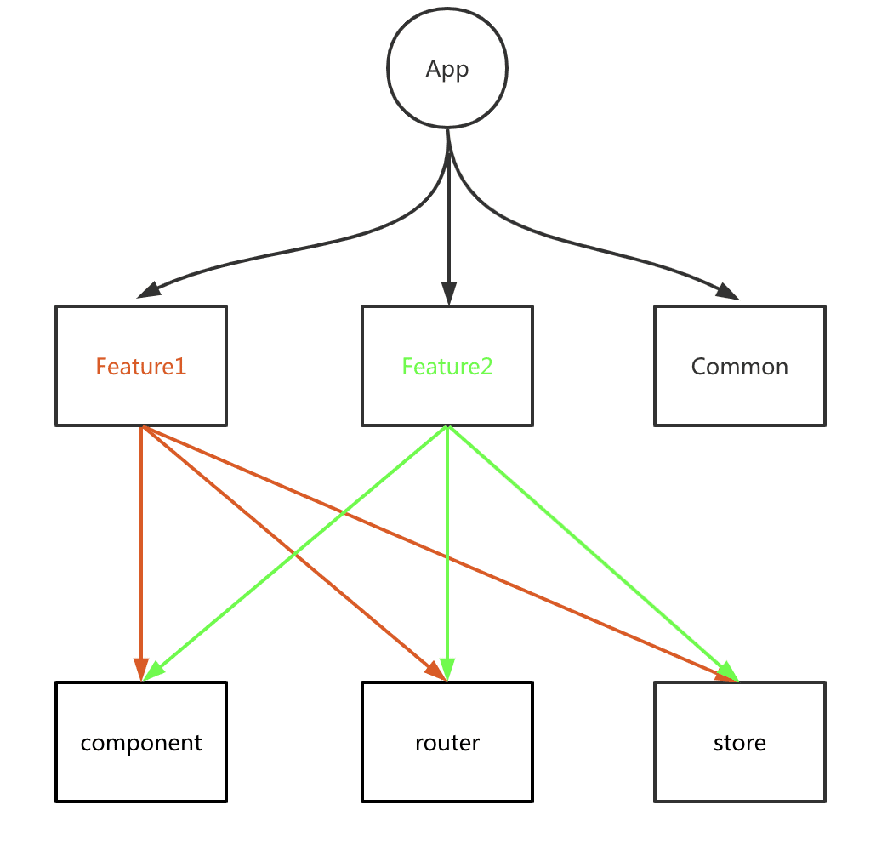
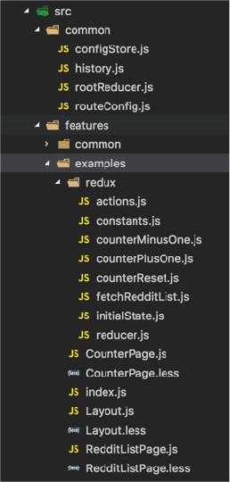
因为当前团队，基本是使用第一种风格，后续我就以此为例，在vite+vue3的基础上做叙述。首先展示一下我目前使用的项目结构设计。
|- docs // 文档
|- dist // 构建成果
|- mock // 数据mock
|- public // 静态资源，会直接拷贝到dist
|- src
|- api // api接口管理
|- assets // 静态资源，这里的资源会被构建工具编译
|- components // 全局组件
|- config // 全局配置
|- directives // 全局指令
|- enums // 枚举及一些常量管理
|- hooks // 全局hooks，用于抽离公用逻辑
|- layouts // 布局组件
|- plugins // 第三方插件
|- router // 路由
|- store // 状态
|- utils // 工具函数
|- views // 页面
|- App.vue // 根组件
|- main.ts // 应用入口
|- types // 类型声明
|- .browserslistrc // 浏览器兼容性配置，可以供多个工具使用
|- .editorconfig // 编辑器配置，统一不同编辑器格式
|- .env.* // 环境变量配置，建议多个环境分别使用不同的文件
|- .npmrc // 统一项目npm镜像源
|- ... // 各工具配置
|- README.md // 说明，包含项目信息及注意事项
|- index.html // 入口页面
|- vite.config.ts // vite配置
这里我们可以采用在官方脚手架的基础上来完善，以后可以直接使用，或者开源到社区，供别人使用。
在创建Vue项目，现在推荐使用 create-vue。
> npm init vue@latest
✔ Project name: … <your-project-name>
✔ Add TypeScript? … No / Yes
✔ Add JSX Support? … No / Yes
✔ Add Vue Router for Single Page Application development? … No / Yes
✔ Add Pinia for state management? … No / Yes
✔ Add Vitest for Unit testing? … No / Yes
✔ Add Cypress for both Unit and End-to-End testing? … No / Yes
✔ Add ESLint for code quality? … No / Yes
✔ Add Prettier for code formatting? … No / Yes
Scaffolding project in ./<your-project-name>...
Done.
由于脚手架创建的工程已包含基础层需要的大部分功能，在此基础上可根据需求引入如下功能即可：
因为类似的文章网上也比较多写的也比较好，这里就不再赘述。
手把手教你用 vite + vue3 + ts + pinia + vueuse 打造企业级前端项目
由于应用层需要结合具体业务情况，这里我就仅谈谈在我开发过程中两个比较常用的功能：
一般中后台项目都有权限控制这部分功能，这里前端需要关心的主要是两方面：
这个好理解，只有你登录了，系统才知道你是谁，我们要做的也很简单，只需要登录成功后把后端返回的令牌存储到本地，然后后续每次请求带上该信息，后端去做验证，如果验证通过返回200，不通过返回401，直接踢回登录页或者给出提示，另外在路由全局前置守卫也可以做判断。
实现方案我这里就不献丑了，贴上两篇写的很好的文章：
前端鉴权的兄弟们：cookie、session、token、jwt、单点登录
下面贴下代码：
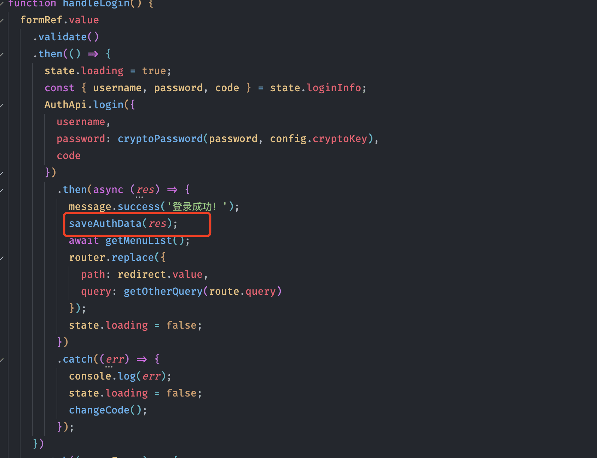
请求拦截器注入认证信息，需要根据后端要求去注入，一般都是在header中。
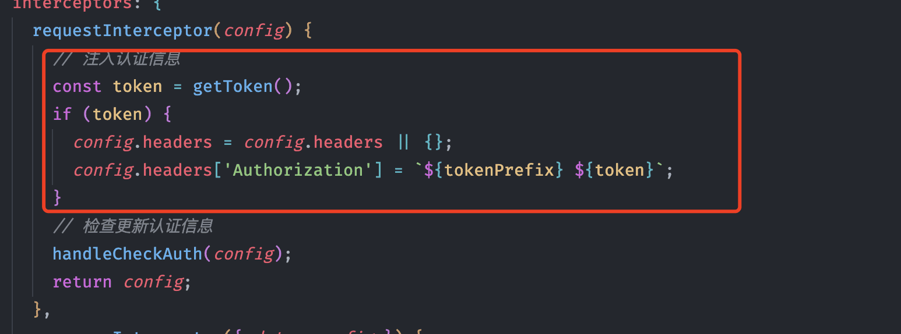
这里有个handleCheckAuth，是做了静默token刷新功能，在token要到期前，使用refreshToken去后台换去新的token，代码如下：
/**
* 刷新token
* @param {string} refreshToken
*/
export const handleRefreshToken: {
(token: string | undefined): void;
refreshDoing?: boolean;
} = (refreshToken) => {
if (handleRefreshToken.refreshDoing) return;
handleRefreshToken.refreshDoing = true; // 加锁，防止重复刷新
auth
.refreshToken({ refresh_token: refreshToken })
.then((res) => saveAuthData(res))
.finally(() => {
handleRefreshToken.refreshDoing = false;
});
};
/**
* 检查更新token
* @param config
*/
export function handleCheckAuth(config: AxiosRequestConfig) {
const tokenExpires = Cookie.get(tokenExpiresKey);
if (Number(tokenExpires) <= Date.now() && !config.skipCheckAuth) {
handleRefreshToken(Cookie.get(refreshTokenKey));
}
}
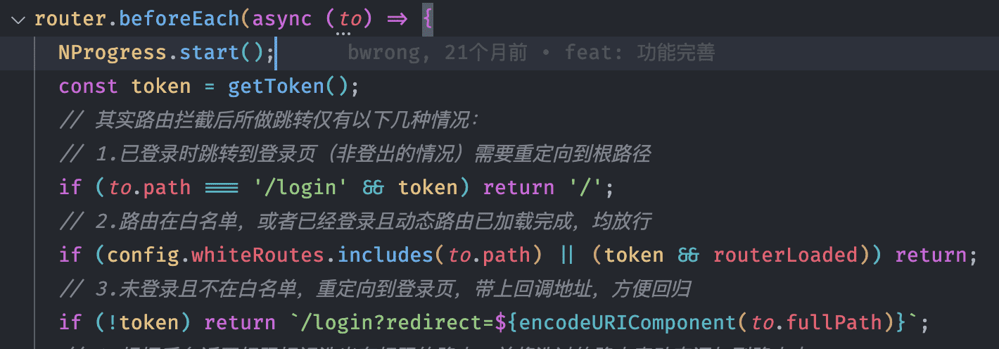
所谓权限控制，就是针对不同的用户赋予不同的权限，对应到前端就是根据不同权限的人动态控制呈现不同的资源，这里资源是一个统称，包含页面、按钮、数据等等，比如超管和管理员进入系统看到的菜单和页面中的按钮不一致。
关于系统权限控制如何设计，主要和业务需求有关系，这里我们不去深究，只是了解一下目前比较流行的一种权限模型。
RBAC（基于角色的权限控制）模型的核心是在用户和权限之间引入了角色的概念。取消了用户和权限的直接关联，改为通过用户关联角色、角色关联权限的方法来间接地赋予用户权限（如下图），从而达到用户和权限解耦的目的。比如在创建多个权限相同的用户，我们不需要给每个人单独设置权限，只需要将他们赋予相同的角色即可。
目前我们大部分系统都是使用该模型，下面我们也就基于该模型来看看前端如何进行权限控制。
其实现在网上讲前端权限控制的文章有很多，总结起来大体思路是，登录成功后获取用户当前的权限数据，然后动态添加路由，生成菜单，页内元素可以通过指令或者vif实现控制。实现方案上有如下两个流派：
整个动态路由表是放在前端，每个路由通过meta.role设置允许访问的角色，登录后后台返回当前用户的role标识信息，前端根据这个role去和路由的meta.role做匹配，清洗出匹配的路由，然后动态注册仅路由。由于只是返回了role信息，所以菜单是需要后端另外提供的。
// asyncRoutes 动态路由表
export const asyncRoutes = [
{
path: '/permission',
component: Layout,
redirect: '/permission/page',
alwaysShow: true,
name: 'Permission',
meta: {
title: 'Permission',
icon: 'lock',
// admin、editor可以查看该路由
roles: ['admin', 'editor']
},
children: [
{
path: 'page',
component: () => import('@/views/permission/page'),
name: 'PagePermission',
meta: {
title: 'Page Permission',
// admin可以查看该路由
roles: ['admin']
}
}
]
}
]
// 这个方法是用来把角色和route.meta.role来进行匹配
function hasPermission(roles, route) {
if (route.meta && route.meta.roles) {
return roles.some(role => route.meta.roles.includes(role))
} else {
return true
}
}
// 这个方法是通过递归来遍历路由，把有权限的路由给遍历出来
export function filterAsyncRoutes(routes, roles) {
const res = []
routes.forEach(route => {
const tmp = { ...route }
if (hasPermission(roles, tmp)) {
if (tmp.children) {
tmp.children = filterAsyncRoutes(tmp.children, roles)
}
res.push(tmp)
}
})
return res
}
除了上述说的后端返回role标识，还有一种变种大家可以查看该文章Vue2.0用户权限控制解决方案/#路由控制。
前端控制的特点如下：
接下来看看后端控制，主要区别就是把路由表挪到了后端，前端可以直接或简单转换使用后端返回的路由表数据注册路由，一般这份数据是可以直接生成菜单数据的，固不需要再单独返回菜单信息。
该方案的特点如下：
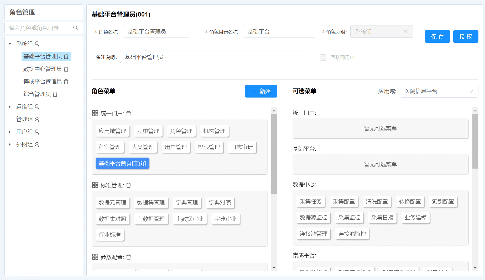
我们可以看到如上两种方案都不是完美的，所以我在项目中采用了另外的方式，基于后端控制做了改良。思路如下：
后台菜单配置时，不再配置url和组件相关信息，毕竟这部分内容是前端路由使用的，前端控制更加合适，也方便前端做调整。然后仅需要填写一个权限表示码就行，降低了前后端数据的耦合性，也就不存在划分不一致带来的问题了。
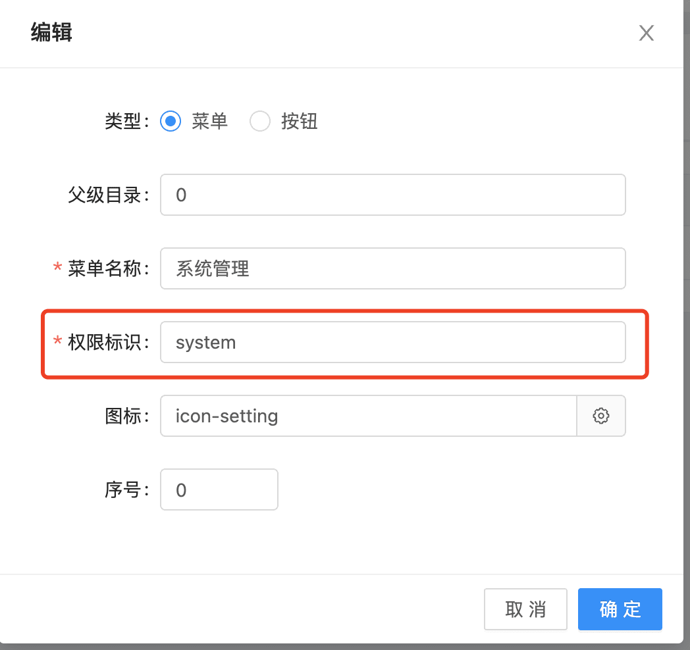
后台给角色设置拥有的菜单、按钮等资源的权限。
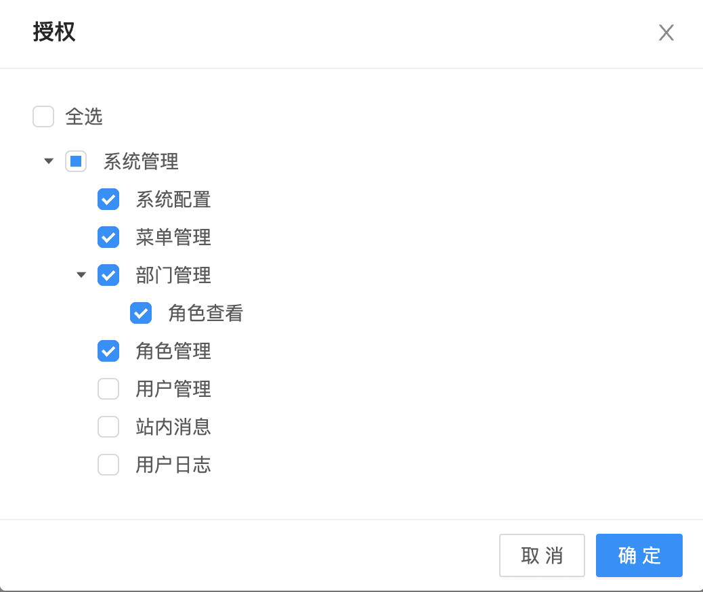
前端维护路由表，和正常路由差不多，但是不用默认注册，而且需要控制的路由要有meta.permission，和前面后台设置的权限标识码对应就行。如果没有permission标识，可以保留或者舍弃，这个根据需求来决定使用哪种方式，我采用的是保留。比如上面我们说的查看详情那里，我就可以不设置permission，这样只要用户有当前菜单的权限（即列表页），那么就不用再设置查看详情的权限了。
{
path: '/system',
name: 'system',
redirect: '/system/department',
meta: {
permission: 'system' // 权限标识码
},
children: [
{
path: '/system/role',
name: 'role',
component: () => import('@/views/system/Role.vue'),
meta: {
permission: 'system/role'
}
}
]
}
前端登录成功以后，后端提供如下菜单数据。
[
{
"id": 1,
"permission": "system", // 前面填写的权限标识码
"name": "系统管理",
"type": 0,
"parentId": 0
},
{
"id": 2,
"permission": "system/role",
"name": "角色管理",
"type": 0,
"parentId": 1
},
{
"id": 3,
"permission": "system/menu",
"name": "菜单管理",
"type": 0,
"parentId": 1
},
{
"id": 4,
"permission": "user",
"name": "用户管理",
"type": 0,
"parentId": 0
},
// ....
]
通过将菜单表和路由表通过permission权限标识码进行匹配，做数据处理。这里数据处理可能比较复杂一点，需要输出两份数据
路由：根据菜单的permission，将路由表中的数据做清洗，去掉permission在菜单中没有的路由。另外一点就是把菜单数据添加到路由的meta中，主要为了方便通过当前路由获取当前的菜单信息。这个数据用于注册动态路由。
{
"path": "/system",
"name": "system",
"redirect": "/system/config",
"meta": {
"permission": "system",
"id": 1,
"title": "系统管理",
"type": 0,
"priority": 0,
"icon": "icon-setting",
"parentId": 0
},
"children": [
{
"path": "/system/config",
"name": "config",
"meta": {
"permission": "system/config",
"id": 2,
"title": "系统配置",
"type": 0,
"priority": 0,
"icon": "icon-setting",
"parentId": 1
}
},
...
]
}
菜单：因为现在菜单设置没有设置url了，所以我们要通过permission去找到对应的路由，然后将其path作为url。该数据用于显示导航菜单。
[{
"id": 1,
"permission": "system",
"title": "系统管理",
"type": 0,
"priority": 0,
"icon": "icon-setting",
"parentId": 0,
"url": "/system"
},{
"id": 2,
"permission": "system/config",
"title": "系统配置",
"type": 0,
"priority": 0,
"icon": "icon-setting",
"parentId": 1,
"url": "/system/config"
}]
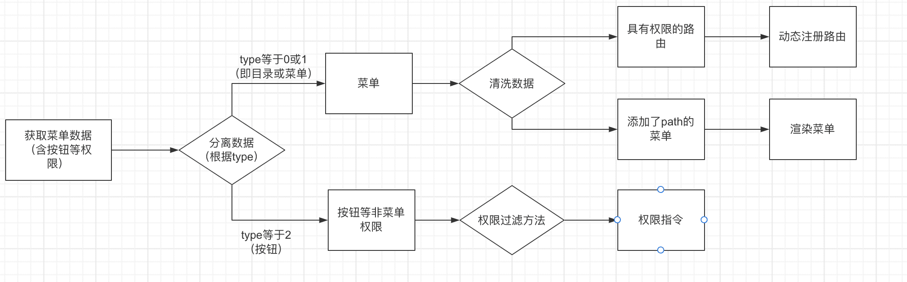
该方案的特点是：
基于该套方案，我这边进行了封装，可以直接进行使用auth-tool。
注意：
另外简单说一说页内元素的控制吧，其实比较简单，后端同样返回有权限的数据，前端通过自定义指令或者Vif做下判断就行。auth-tool也做了封装，需要的自己查看源码吧。
Vue.directive(directiveName, {
mounted(el:Element, binding) {
!hasAuth(binding.value) && el.parentNode?.removeChild(el);
}
});
另外一个比较重要的功能就是请求的封装了，其实axios本身还是比较成熟了，之所以要把这个单独拿出来说，主要是之前在项目上遇到过一些问题。
请求建议集中管理，可以按照业务进行模块划分，页面中只需要调用这里提供的方法就行。不建议直接写在页面上，不方便维护，万一接口url做了调整，你都不知道那些页面使用了，只有全局去替换。
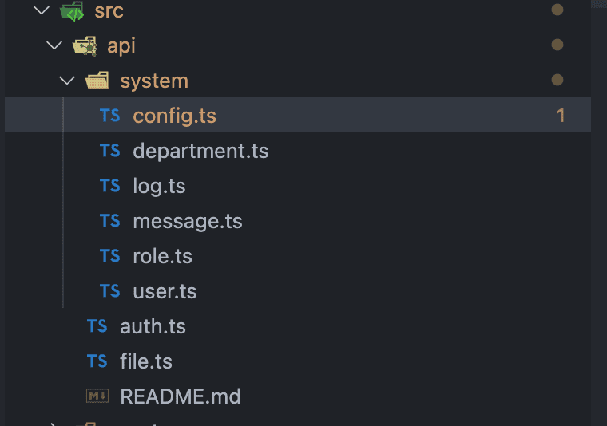
import { get } from '../../utils/request';
import type { RequestConfig } from '@/utils/request/Request';
const prefix = '/system/config';
export default { list: <T = any>(params: object, config?: RequestConfig) => get<T>(`${prefix}`, params, config) };
我在项目中也封装了一个，展示还没有单独提取出来，有兴趣的可以看看这里
* 1. 多实例，在存在多个请求服务时使用
* 2. 拦截器增强，支持全局拦截器和实例拦截器，执行顺序采用洋葱模型
* 3. 支持重复请求取消功能，重复请求：url、method、参数均一致为重复，也可以自己传入判断函数
* 4. 支持直接请求绝对地址
* 5. ts类型推断增强，更好的类型提示
如果项目中存在多人开发，那么规范和约定就必不可少，除了我们要形成团队的一些规范文档外，在框架上我们也可以通过工程化去约束：
"gitHooks": {
"pre-commit": "lint-staged --allow-empty"
},
"lint-staged": {
"*.{vue,js,jsx,cjs,mjs,ts,tsx}": [
"npm run lint",
"prettier --write"
],
"*.{css,less}": [
"npm run lint:style",
"prettier --write"
]
}
关于版本管理这块，我之前遇到过得问题就是给多个用户部署不同的版本，但是当某个用户出问题时，不能第一时间知道该用户部署的代码是什么时候的。所以后来在构建时注入了相关信息。
import { GitRevisionPlugin } from 'git-revision-webpack-plugin';
import pkg from './package.json';
let appVersion = `app-version=${pkg.version},build-time=${new Date().toLocaleString()}`;
if (IS_PRODUCTION) {
try {
const GitRevision = new GitRevisionPlugin();
appVersion += `,git-hash=${GitRevision.version()},git-branch=${GitRevision.branch()}`;
} catch (error) {
console.warn('无法获取git信息,无法注入相关内容!');
}
}
...
createHtmlPlugin({
minify: true,
entry: '/src/main.ts',
// template: 'index.html',
inject: {
data: {
BASE_URL: VITE_BASE_URL,
title: VITE_TITLE,
appVersion
}
}
}),

然后关于更新日志和版本发布，可以使用release-it或standard-version去做。
优化主要是两个方向：
当你的框架成熟后，可以自己封装一个脚手架，可以做一些定制化的配置，这个比较简单，感兴趣的查看用vue3+ts+electron撸了一个好用的脚手架工具，这样团队成员使用起来就比较方便，也比较好管理。
算了，下班了，没时间写了。